Quick first flight
Ten steps, from gate to gate. Every page is explained in detail further down.
- Power up. Load the Concorde FXP and set battery 1 or 2 to ON: the MCDU switches on (splash image for 10 s). To show it in a window: Plugins > Concorde_NGR > Afficher / masquer MCDU (show / hide).
- Prepare the aircraft. DATA > ENGINEER > SEQ ENGINEER FO > START PLANE COPILOT: press twice within 5 s. The first officer and the flight engineer prepare the aircraft, then report by voice.
- SimBrief plan. INIT > SIMBRIEF: enter your SimBrief ID on L1, then INIT REQUEST (L6) to fetch the plan, INSERT F-PLN (R5) for the route, and LOAD FUEL/PAX (R6) for passengers, cargo and fuel. Fuel is computed by NGR: no APPLY is needed in the Colimata panel any more.
Without SimBrief: INIT > FMS FILES, then FMS LOAD. - Departure and arrival. INIT > DEPARTURE (runway, SID), then INIT > ARRIVAL (approach, STAR) and INSERT*. Check SPD KT/MACH and CRZ FL; OPTI CRUISE ALT (magenta) gives the advised level.
- Take-off speeds. PERF: V1 / VR / V2, runway, weight and CG/TRIM setting.
- Engines. SEQ ENGINEER FO > START ENGINE ENGINEER (press twice).
- Before take-off: arm MANAGED. On the ND, press GERE (managed). It does nothing until the autopilot is engaged. Take-off is flown by hand.
- After take-off: engage the autopilot. As soon as the AP is engaged, MANAGED takes over speed and V/S and follows the profile up to cruise. With the REHEAT AUTO option, reheat is on between M1.0 and M1.7. Below FL100 the target is 250 kt from take-off. Supersonic, MANAGED accelerates along the VMO like Air France: full thrust, the climb holds the speed, up to M1.7. At touchdown, MANAGED disconnects the autothrottles (message
A/THR OFF (TOUCHDOWN)). - En route. VOL page (profile, terrain, weather) and FUEL PRED (fuel remaining at destination). MANAGED also flies the descent.
- Approach and parking. Optionally, ILS AUTO on the ND sets the localizer course by itself as soon as the ILS is received: the approach is then flown on the ILS alone. At the gate: OFF ENGINE ENGINEER, then OFF PLANE COPILOT.
Installation
Requirements: X-Plane 12.4.4 or later only, Windows 64-bit, Colimata Concorde FXP version 3.53. X-Plane must be closed during installation.
Not compatible with X-Plane 11 (the plugin uses the X-Plane 12 interface, and the required Concorde FXP v3.53 is an X-Plane 12 aircraft).
- Extract the whole zip into a separate folder (not directly into X-Plane).
Tip: before extracting, right-click the zip > Properties > tick "Unblock" > OK. Windows will no longer block the .bat files (see Troubleshooting). - Run
installer\installer.bat. It finds X-Plane 12 andCONCORDE_FXP.acf, then offers:
It adds the airfoils, the tablet and the MCDU screen in the cockpit, and backs up the original (Choice Use 1 Automatic install, exact original ACF (recommended) 2 Force key by key (other version, or already modified ACF) 3 Copy the files only (you edit the ACF by hand) 4 Uninstall 5 Quit CONCORDE_FXP.acf.originalconcorde). It then offers to copy theConcorde_NGRplugin intoX-Plane 12\Resources\plugins: answer Y. - Start X-Plane, load the Concorde FXP, battery 1 or 2 ON: the MCDU powers up.
Uninstall
installer.bat choice 4. The aircraft goes back to exactly the original. Details of every change: installer\LIST_OF_CHANGES.txt.
Check that it works
In X-Plane 12\Log.txt, look for Loaded Concorde_NGR.xpl and libcef.dll pret.
Screen and keys
Line keys: 6 on the left (L1 to L6) and 6 on the right (R1 to R6). The text next to a key tells what it does: open a page (<SIMBRIEF, WIND>), toggle a choice (<ON) or send the scratchpad into the line. A key with no function shows NOT ALLOWED.
◀ ▶ (above the page keys): previous / next page, like a web browser.
Status line (at the very bottom): X-PLANE OK = link with the simulator; FMS OK = link with the plugin and the X-Plane FMS. HORS LIGNE (offline) means a problem (see Troubleshooting).
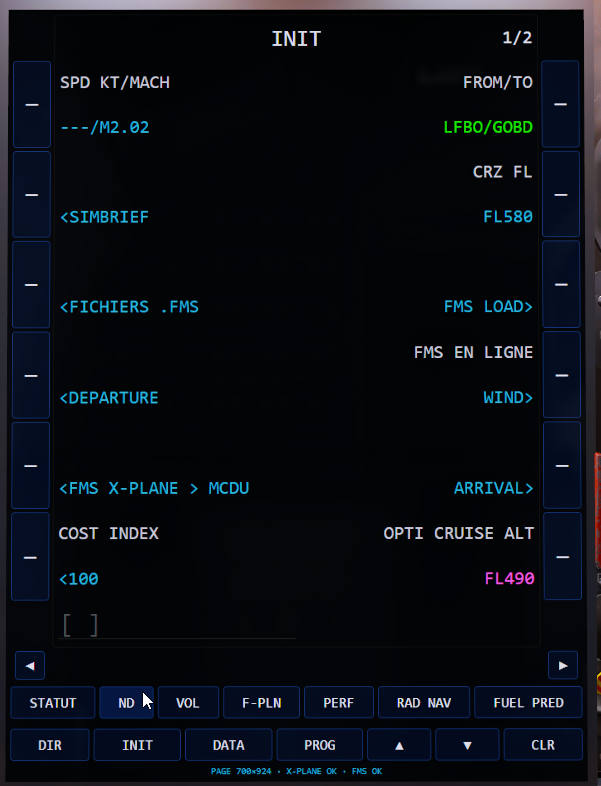
Page keys
| Key | Page |
|---|---|
| STATUS | Aircraft status: GEN, HYD, ECAM, WHEELS, CABIN, PLANE, WX, FUEL PRED, JET |
| ND | Navigation display, autopilot buttons and MANAGED (GERE) |
| VOL | Flight profile, terrain, weather, checklists |
| F-PLN | Flight plan |
| PERF | Performance of the current phase |
| RAD NAV | VHF, VOR, ADF radios, transponder |
| FUEL PRED | Fuel prediction |
| DIR | Direct to a waypoint |
| INIT | Flight preparation |
| DATA | Index: options, SimBrief, fuel, .FMS files, engineer |
| PROG | Flight progress |
| ▲ ▼ | Previous / next sheet of the same page (1/2, 2/2…) |
| CLR | Clears the scratchpad, then the message; on an empty scratchpad, writes CLR to delete a value |
Entering a value
- Type on the PC keyboard: everything goes into the scratchpad
[ ]at the bottom of the screen. - Press the matching line key (e.g.
M2.02then L1 on INIT). - A rejected value shows
FORMAT ERROR: correct it and try again.
Colours
| Colour | Meaning |
|---|---|
| White | Label |
| Blue | Editable value or action |
| Green | Measured or confirmed value |
| Magenta | Computed or advised value (OPTI CRUISE ALT, SPD GEREE) |
| Orange | To check, alert |
The pages
One section per page, in flight order.
INIT: flight preparation
| Key | Line | Function |
|---|---|---|
| L1 | SPD KT/MACH | Cruise speed or Mach: 350/, /0.93, 350/0.93, M2.02. CLR clears it: the aircraft then flies the COST INDEX Mach. A speed entered here always has priority over the CI. |
| L2 | <SIMBRIEF | Opens the SIMBRIEF page. |
| L3 | <FMS FILES | List of X-Plane .fms plans. |
| L4 | COST INDEX | 0 to 200, 100 = optimal flight: as fast as the nose temperature allows (125 °C, 2 °C below the 127 °C TMO), from the real air: about M2.05 in standard atmosphere, M2.14 at −65 °C, up to M2.30 in very cold air. CI 200 = up to 127 °C; lower = slower, down to M1.80 (CI 0). Shows the resulting Mach. CLR = 100. Empty key = CRUISE MODE page. |
| L5 | CRZ MODE | Cruise mode: CRUISE CLIMB or LEVEL. The key opens the CRUISE MODE page. |
| L6 | <DEPARTURE | Departure runway and SID. |
| R1 | FROM/TO | Plan departure / arrival (green when loaded, orange when empty). |
| R2 | CRZ FL | Cruise level, FL100 to FL650 (e.g. FL580). The cockpit ALT selector takes the same value. |
| R3 | FMS LOAD> | Passengers / fuel loading for a .fms plan. |
| R4 | WIND> | Flight winds (see below). |
| R5 | ARRIVAL> | Approach, transition and STAR. |
| R6 | OPTI CRUISE ALT | Advised level (magenta). The key opens the detail: weight, ISA deviation, wind, best subsonic and supersonic Mach/FL, distance per tonne and fuel at destination. The supersonic level comes from the Air France cruise-climb table (weight × ISA deviation). * = estimated value. |
WIND: three pages, CLIMB WIND, CRZ WIND (one wind per plan waypoint, at cruise level) and DESCENT WIND. Enter a wind as 270/45 on the wanted line, CLR to delete it. WIND REQUEST> fills the winds automatically from the selected source (SimBrief or X-Plane FMS). The real measured wind is shown for comparison.
SIMBRIEF
| Key | Line | Function |
|---|---|---|
| L1 | PILOT ID | Your SimBrief ID (digits only). It is remembered. |
| R1 | STATUS | OK, ATTENTE (waiting), ERREUR (error), RESEAU (no internet). |
| R2 | RESET F-PLN> | Clears the MCDU plan and the X-Plane FMS. Press twice within 5 s (the first press arms it, in orange). |
| — | BLOCK NGB/SB | Fuel computed by NGR / SimBrief fuel (information). If the computation exceeds the capacity (95 t): orange title FUEL>CAPACITY (or FUEL INSUFFICIENT if the reserve is no longer covered) and value 95.0 RES-x.x = missing reserve. |
| — | MACH/FL | Mach and level of the NGR computation (orange if the flight stays subsonic). |
| — | ZFW/TOW · PAX/DIST | Weights, passengers, distance. |
| L5 | <WIND REQUEST | Loads the SimBrief winds. |
| R5 | INSERT F-PLN> | Inserts the route. SID and STAR are not inserted: pick them afterwards with DEPARTURE / ARRIVAL. |
| L6 | <INIT REQUEST | Fetches your latest SimBrief plan. |
| R6 | LOAD FUEL/PAX> | Loads passengers and cargo (SimBrief) and the fuel computed by NGR (SimBrief only if the computation is impossible). 20 s check: CHARGE (loaded, green) or A VERIFIER (to check, orange). Above 95 t, 95 t are loaded and the orange message FUEL > CAPACITY : RESERVE -x.xT is shown. |
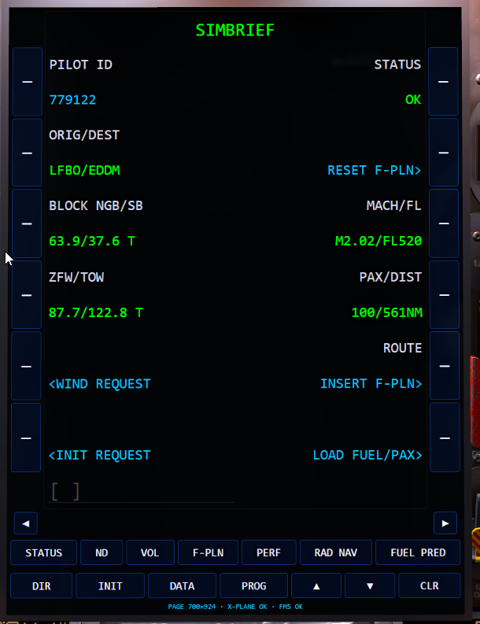
FMS FILES
The list of X-Plane .fms plans, 6 per page (▲ ▼ to scroll). Press a plan: it is loaded into the MCDU and the X-Plane FMS. The cruise level is taken from the file when present, winds are requested from X-Plane, then the FMS LOAD page opens.
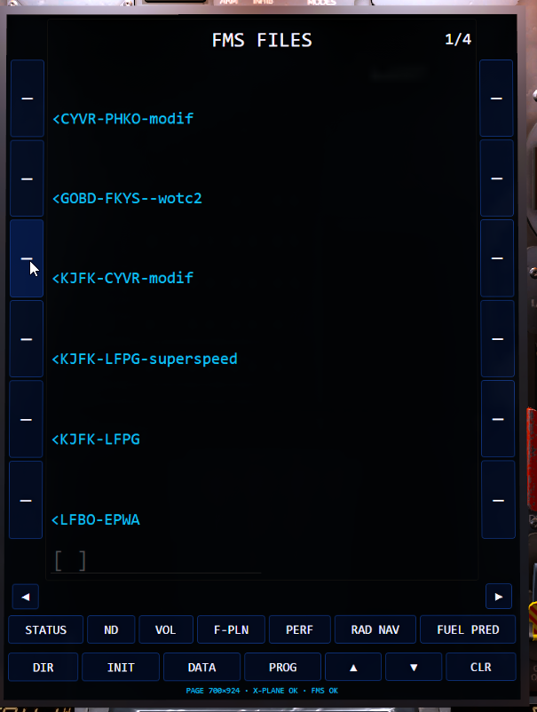
FMS LOAD
| Key | Line | Function |
|---|---|---|
| L1 | PAX | 0 to 100. |
| R1 | CARGO | 0 to 4.3 t. |
| — | ZFW/TOW · DIST/WIND | Weights (orange if too heavy), distance and head (HD) or tail (TL) wind. |
| — | TRIP/RESERVE · MACH/FL | Trip fuel, reserve, computed Mach/FL. Air France reserves (TU2B manual): alternate 6.0 t, 30 min holding 6.4 t, 5 % route reserve, taxi 1 t. |
| — | COMPUTED FUEL | Fuel computed by NGR. Above 95 t: same orange alert as SIMBRIEF. |
| L5 | FUEL TO LOAD | Defaults to the computation; you can enter 1 to 95 t. CLR goes back to the computation. Loading never exceeds 95 t. |
| R4 | FUEL ONLY> | Loads the fuel only. |
| R5 | WIND REQUEST> | Requests the winds again. |
| L6 | <F-PLN | Opens the flight plan. |
| R6 | LOAD> | Loads passengers, cargo and fuel (same check as SimBrief). |

DEPARTURE / ARRIVAL
From INIT, or by pressing the first / last waypoint on F-PLN. The choice is made step by step: press a blue <… line, the next step appears. ▲ ▼ scroll the list (4 lines). The selection is shown in yellow at the top.
- DEPARTURE: runway ▸ SID (or
NO SID) ▸ transition (orNO TRANS). L1 goes back to runways, R1 to SIDs. The plan origin is placed at the threshold of the chosen runway. - ARRIVAL: approach ▸ VIA (or
NO VIA) ▸ STAR (orNO STAR) ▸ transition. L1 goes back to approaches, R1 to STARs. - R6
INSERT*(orange): inserts into the plan and the X-Plane FMS, then opens F-PLN. L6<F-PLN: leave without inserting.
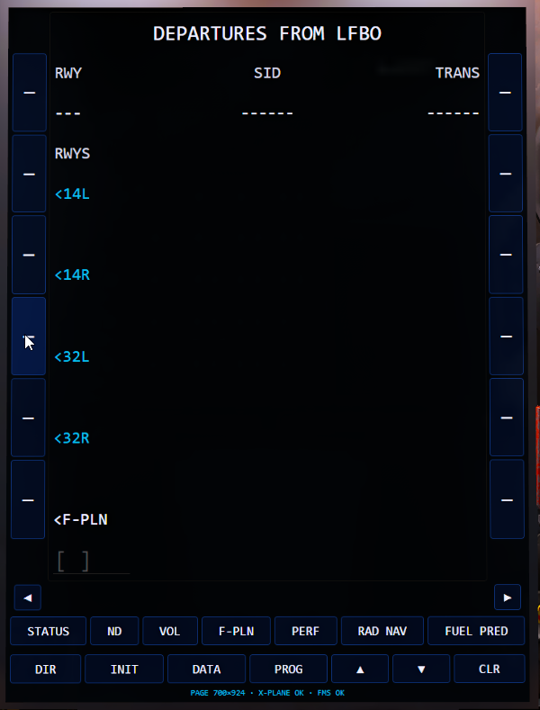

F-PLN: flight plan
5 waypoints per page (▲ ▼). For each waypoint: course and distance from the previous one, route (airway, SID…), altitude or constraint, passing time computed with the winds. > marks the active waypoint. At the bottom: destination, arrival time, remaining distance and EFOB (fuel at destination).
| Action | Effect |
|---|---|
| Left key, empty scratchpad | Copies the waypoint name into the scratchpad. 1st waypoint: DEPARTURE; last: ARRIVAL. |
Left key + NAME | Inserts that waypoint (VOR, NDB, fix, airport) before the line. |
Left key + DEL / CLR | Deletes the waypoint. |
| Right key + constraint | +5000 (at or above), -FL100 (at or below), FL170/FL150 (between), 250/FL080 (speed/altitude), 580 = FL580. Constraint in magenta; CLR deletes it. |
| L6, empty scratchpad | Opens DIR TO. |
L6 + NAME | Adds the waypoint before the destination. |
Empty plan: the page offers <SIMBRIEF, <FMS FILES, or typing DEP/ARR on L4 (e.g. LFPG/KJFK).
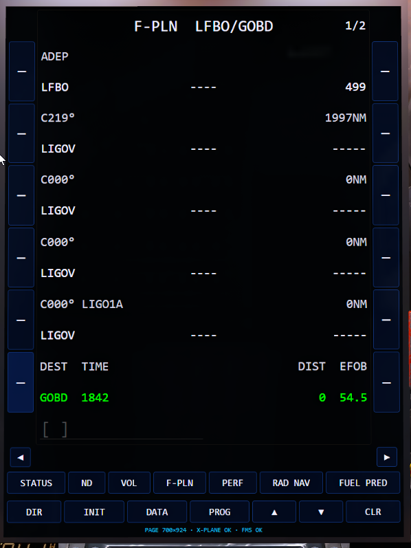
DIR TO
The list of remaining waypoints with their distance: press one for a direct, also sent to the X-Plane FMS.
You can also type a name on L1: if it is in the plan, direct to it; otherwise it is searched in the database, inserted before the active waypoint, then direct.
Messages: DIR TO X (green) = done; FMS NON SYNCHRO (orange, not in sync) = check the X-Plane FMS.

PERF: performance
PERF opens the current phase. <PHASE / PHASE> (L6 / R6) step through them: TAKE OFF ▸ CLB ▸ CRZ ▸ APPR.
TAKE OFF: the longest runway is picked automatically (LONGEST); R1 opens DEPARTURE to change it.
| Key | Line | Function |
|---|---|---|
| — | V1 / VR / V2 | Computed take-off speeds. |
| R1 | TORA / ELEV | Runway length available and elevation. |
| R2 | TOW / MTOW RWY | Take-off weight / maximum weight for this runway (orange if exceeded). |
| R3 | ASD / TOD REQ | Required accelerate-stop and take-off distances. |
| L4 | OAT/QNH | X-Plane or METAR source. Entry 12/1013; CLR = auto. |
| R4 | WIND | Runway wind, 270/15; CLR = auto. |
| L5 | RWY | Toggles runway DRY / WET (SECHE / MOUILLEE). |
| R5 | V1 MIN/MAX | V1 range; PISTE COURTE (runway too short) if impossible. |
| L6 | <CG/TRIM | Weight, CG %MAC, nose 5° / 4 reheats ON, fuel trim TAKEOFF, ASI bugs, reminders (250 kt ASAP, reheat OFF at 2-3,000 ft). |
Orange message DECOLLAGE LIMITE : PISTE TROP COURTE (take-off limited, runway too short) when the weight is too high for the runway.
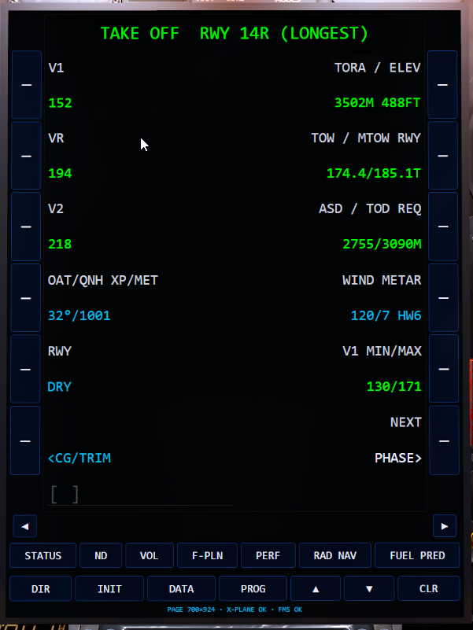
CLB (climb)
| Key | Line | Function |
|---|---|---|
| L1 | SPD/MACH | Managed speed / Mach. |
| R1 | MAN SPD CLB | Selected climb speed, 250 to 500 kt; empty or CLR = managed. |
| — | PALIER FIXE | Subsonic level-off and supersonic transition (e.g. FL290 M0.95>…). |
| — | TRIM CARBU · CG ACT | Fuel trim mode, actual CG. |
| — | CONSIGNE · REHEAT MAX | Phase advice; reheat 15 min max. |
| — | CRZ · V/S / THR | Cruise Mach/FL; current V/S and thrust law. |
CRZ (cruise)
| Key | Line | Function |
|---|---|---|
| L1 | OPTI MACH CRZ | Optimum Mach. Entering FL560 changes the level. |
| R1 | OPTI CRUISE ALT | Optimum level (magenta). Empty key = adopt this level; FL560 = set it. |
| R2 | DIST | Remaining distance; the key opens the OPTI CRUISE ALT detail (its R3 key CRZ MODE opens the CRUISE MODE page). |
| — | FOB/GW · EFOB/RES | Fuel, weight; fuel at destination / reserve. |
| — | ACT FF/AUTON · TRIP EST · MOY FF/TEMPS | Current fuel flow and endurance, estimated trip, average flow and flight time. |
APPR (approach): VAPP (with wind correction), VLS, landing weight (orange above MLW), destination and approach, nose 12.5° / visor down, attitude ~10° on approach and ~12° at touchdown, fuel trim LANDING, reminders 60 ft THR IDLE and REVERSE at touchdown.
CRUISE MODE
Access: INIT key L5 (or empty L4), or PERF CRZ > OPTI CRUISE ALT key R3. Compares, from the present position to the descent (remaining climb and wind included), flight time, fuel burn and fuel at arrival (EFOB, orange below reserves):
| Key | Line | Role |
|---|---|---|
| L2 | <CRUISE CLIMB TU2B | Cruise climb at optimum speed (M2, or less when the air is hot or the aircraft heavy). Values from the real Air France table (TU2B manual, 11.35.20). The planned level climbs by itself in 10 FL steps as weight decreases; the vertical profile and T/D follow. |
| L3 | <LEVEL | Stays at the planned level (e.g. imposed by ATC): automatic climb off. * = estimated value. |
| — | LEVEL VS CLIMB | Extra (or saved) fuel and minutes when flying level. |
| L5 | COST INDEX | CI 0–200 and resulting Mach (same as INIT L4). |
| R5 | ETA / REQ ARR | Arrival time with this CI (orange if EFOB falls below reserves). Enter a required time, e.g. 1745: the MCDU picks the lowest CI that arrives on time. Not reachable even at CI 200 = orange message. |
| L6 / R6 | <OPTI · VS CI 100 | Back to the OPTI CRUISE ALT detail · minutes and tonnes more or less than CI 100. |
The mode shown is always the real state: entering a level by hand on PERF CRZ switches to LEVEL; an empty key on OPTI CRUISE ALT returns to CRUISE CLIMB.
The best subsonic Mach/level (overland) is still shown on OPTI CRUISE ALT.
ALT selector = ATC clearance (as on the A320). The managed profile never goes past the selector. The MCDU writes it in two cases only: a level entered in the MCDU (INIT CRZ FL, PERF CRZ), and the COPILOT ALT below.
COPILOT ALT (OPTIONS > MANAGED MODE, ON by default): like a first officer, the MCDU sets the limit of each step on the selector itself, once per step (never in a loop), with the message COPILOT: ALT 6000 (CSTR xxx). You see it on the selector; if you turn it, that is your clearance and the copilot leaves the selector alone until the next phase (climb, cruise, descent).
| Step | The copilot sets |
|---|---|
| Climb (after take-off, AP engaged) | The next "at or below" constraint of the SID (e.g. 6000 departing London); once the waypoint is passed, the next one; otherwise the CRZ FL (only if the selector is lower). |
| CRUISE CLIMB | FL600, ceiling of the cruise climb (only if the selector is lower). |
| Descent (TOD) | The next "at or above" constraint of the STAR or approach; once the waypoint is passed, the next one; then the altitude of the first approach waypoint. |
SID constraint lifted by the selector: in the climb, if you turn the selector above an "at or below" SID constraint (−, @ or between), it is deleted from the F-PLN (message SID CSTR LIFTED (ALT SEL)) and the climb resumes: that is the ATC clearance. Tip: set the CRZ FL (an ALT above the CRZ FL becomes the CRZ FL). A value set on the ground lifts nothing. STAR, approach and "at or above" constraints are never lifted this way (right key of the waypoint + CLR on the F-PLN page).
The selector then sets the limits:
- Climb: ALT below CRZ FL (e.g. "maintain FL250") = level-off at that ALT, message
PILOT ALT FL250 < CRZ FL…. Raise the ALT to resume the climb. - Cruise: a new ALT becomes the CRZ FL, LEVEL mode. In CRUISE CLIMB, a higher ALT is a ceiling: set e.g. FL600 and the aircraft climbs by itself in 10 FL steps up to that level at most. Otherwise, message
CRUISE CLIMB: RAISE ALT SEL. - Descent: the aircraft does not descend below the selected ALT.
INIT 2/2 (up / down arrows from INIT): <FMS X-PLANE > MCDU (takes the X-Plane FMS plan), FMS ONLINE / OFFLINE status, then TERRAIN OPTIONS>.
Supersonic fuel burn. Above Mach 1, fuel flow is computed from the real thrust and the Olympus 593 specific consumption, corrected for temperature. It is calibrated on the Air France tables and shown on the fuel flow gauges (nothing hidden). FUEL PRED, PROG and OPTI use the same calculation.
Maximum speed: the nose temperature. As on the real Concorde, the limit is the 127 °C TMO (TU2B manual), computed from the real outside air: in cold air you can fly faster than M2. The machmeter maximum Mach needle is set to M2.40 and the total temperature shown in the cockpit is the one computed by NGR (Colimata's depended on Mach only). MCDU alarm: orange NOSE TEMP NEAR TMO at 126.5 °C, red TMO EXCEEDED : REDUCE MACH at 127 °C. VMO stays Colimata's (535 kt at high altitude). Above M2.03, if Colimata cuts its thrust (its former ceiling around M2.02-2.20), NGR keeps it going. Do not press AP MAX CRUISE (it caps Colimata at M2.02): the CRUISE checklist asks AP MAX CRUISE.....OFF.
PROG: flight progress
The current phase is in the title (PREFLIGHT, TAKE OFF, CLIMB, CRUISE, DESCENT, APPROACH). Read only, except R5.
| Line | Content |
|---|---|
| CRZ · ALT ACT | Cruise level; current altitude. |
| TO · DIST/TIME | Next waypoint, distance and passing time. |
| DEST · DIST/ETA | Destination, remaining distance and arrival time. |
| MACH/GS · V/S | Mach, ground speed, vertical speed. |
| SAT/UTC | Outside temperature, UTC time. |
| R5 SPD GEREE | Toggles managed speed ON (magenta, with target) / OFF. ON: the autothrottle holds the profile speed (IAS HOLD / ACQ). |
| VENT REEL · VENT PREVU | Measured wind; forecast wind at the next waypoint. |

FUEL PRED: fuel prediction
| Line | Content |
|---|---|
| AT · UTC/EFOB | Destination; arrival time / fuel at destination (orange below reserve). |
| GW · FOB | Gross weight; fuel on board (t). |
| TRIP/TIME · DIST | Trip fuel and time; remaining distance. |
| RTE RSV/ALTN | Route reserve / alternate fuel. |
| DIST REST PRED · LIVE | Distance margin beyond destination, predicted and with the current consumption (green if positive, orange if negative). |
| DIST POSS/AUTON | Possible range and endurance. |
| LW FCST/MLW | Forecast landing weight / maximum (orange if exceeded: think JETTISON). |
| R6 JETTISON> | Opens fuel dumping (orange while dumping). |

JETTISON: fuel dumping
Computes the fuel to dump to land below MLW (111.1 t) without touching the fuel for the rest of the flight and the reserves. The diagram shows every tank. Dumping uses the non-feeder tanks, pro rata, so the CG moves little; it stops automatically at the target.
| Button | Effect |
|---|---|
| AUTO TARGET (MLW) | Automatic target: land at MLW. |
| MANUAL DUMP · DUMP −1T / +1T | Quantity set by hand (5 t minimum left on board). |
| 1.5 T/MIN | Rate: 0.5 / 1 / 1.5 / 2 / 3 t/min. |
| START | Press twice within 5 s. Not allowed on the ground. |
| STOP | Stops dumping. |
| ◄ FUEL PRED | Back. |
On the right: FOB, TO DUMP, TARGET, quantity already dumped, EFOB at destination, forecast LW, rate and time left.

RAD NAV: radios
| Key | Line | Function |
|---|---|---|
| L1 / L2 | VHF1 / VHF2 ACTIVE <SWAP | Empty key: swaps active / standby. With a frequency: sets it as standby. |
| R1 / R2 | WAITING | Standby frequency: 118.705 or 18705 (118.000 to 136.990). |
| L3 / R3 | VOR1 / VOR2 | Frequency (108.00 to 117.95) or identifier (e.g. TOU: nearest beacon). Ident and DME shown. |
| L4 / R4 | CRS1 / CRS2 | VOR/LOC selector courses. |
| L5 / R5 | ADF1 / ADF2 | ADF frequency (e.g. 375). |
| L6 | <SURV | Transponder / TCAS page: SQWK code, STBY / ALT / TA / TA-RA, IDENT, ABV / NORM / BLW / ALL filters, range. |

ND: navigation display and autopilot
Top: advised OPTI level, active constraint (CSTR), T/D, destination and time, range, fuel trim mode; on the right, selected altitude and heading.
| Button | Effect |
|---|---|
| ARC / ROSE / PLAN | Changes the display mode. In PLAN, ◄ PT / PT ► step through the plan waypoints. |
| RNG− / RNG+ | Range (also with the mouse wheel). |
| CSTR · TFC · VOR1 · VOR2 · ADF · ILS | Shows constraints, traffic, VOR/ADF needles, ILS rose. |
| WPT · VOR.D · NDB · ARPT | As on Airbus: waypoints (range 40 NM or less), VOR / VOR-DME / DME, NDB, airports around the aircraft (magenta). ARPT only shows airfields where Concorde can land at its current weight (our performance: 2,438 m at 111 t at sea level); grey = emergency landing only (runway ≥ 2,500 m). |
| DIR TO · SURV · VOL | Shortcuts to DIR TO, the transponder/TCAS page and the VOL page. |
Middle: the alarms (ALARM, red/orange) and the phase checklist (◄ ▶ to change list, ✔ to confirm; lines tick themselves when the aircraft confirms them).
Bottom, the autopilot (each button drives the real Colimata button and lights up with its annunciator):
| Button | Effect |
|---|---|
| AP1 · AP2 · AT1 · AT2 · FD | Autopilots, autothrottles, flight directors. |
| ACQ · IAS · MACH | IAS ACQ, IAS HOLD, MACH HOLD. On the ground the autothrottle is not engaged with these modes (safety: it would go to full power). |
| LAND | Autoland. |
| ILS AUTO | Option: sets the localizer course by itself as soon as the ILS is received; the approach is then flown on the ILS alone. |
| WX | Shows the cockpit weather radar behind the ND (range = radar selector). |
| GERE | Managed mode: speed + V/S following the profile, from climb to descent. Arm it before take-off: it acts as soon as the AP is engaged (above 1,000 ft AGL). The text on the right gives the target (SPD, ALT, V/S, segment). Below FL100: 250 kt (also on go-around). At touchdown: autothrottles disconnected. |
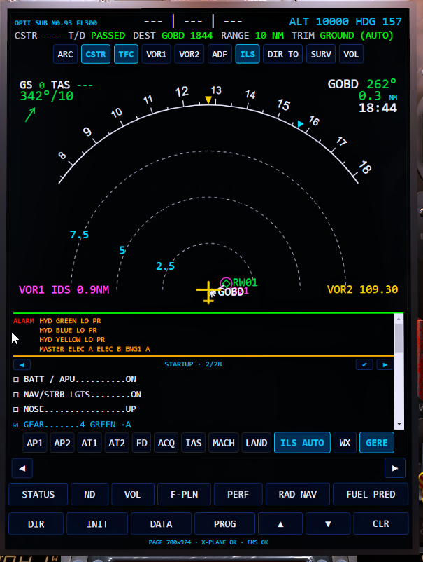
VOL: flight profile
Top (briefing): phase, FL, Mach, ground speed; route, remaining distance and time, ETA, TOD, FOB; reheat time used (out of 15 min), wind, transition level; LAND / SEA distances and supersonic distance; current and next checklist. The next event blinks less than 2 min before.
The profile: planned climb, level-off, Mach (M0.95, M1.3, M1.7… markers), cruise and descent, real aircraft position, terrain under the route, clouds and storms (CB), land / sea band at the bottom.
| Button | Effect |
|---|---|
| PROFILE · TERRAIN · WX | Shows / hides the planned profile, the terrain, X-Plane weather. |
| RESET | Restores zoom, screen split and text sizes. |
| ✈ PLANE | The zoomed profile follows the aircraft (otherwise free). |
| WPT · VOR · APT · MARKERS · CHECKLIST | Shows waypoints, VORs, airports, sequence markers, checklist. |
| SOUND | Mutes / restores all audio alerts. |
| SURV · ND | Shortcuts. |
Mouse: wheel = zoom around the cursor; the ⇕ bar splits profile and briefing; drag the briefing to scroll; wheel on text = text size.
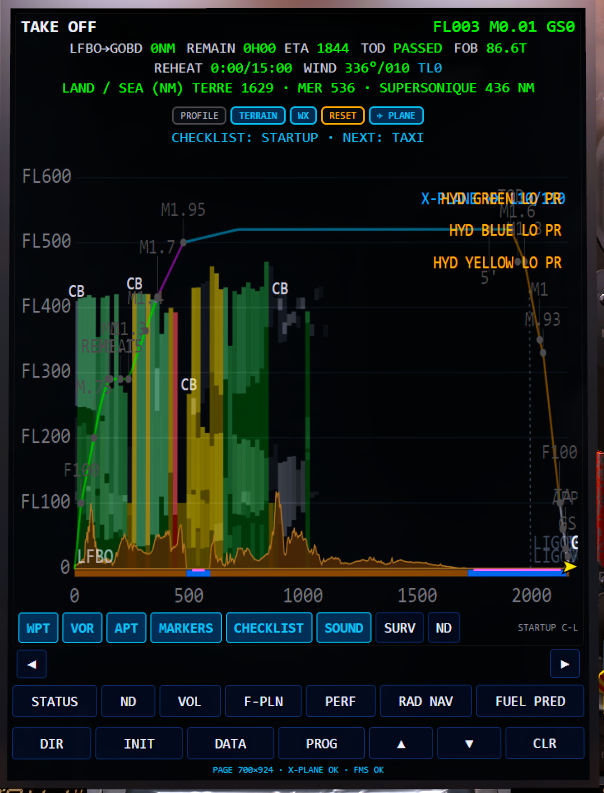
STATUS: aircraft state
Tabs at the bottom of the screen. Most pages are read only, ECAM style: green = normal, amber/orange = fault, cyan = units.
| Tab | Content |
|---|---|
| GEN | The 4 engines: N1 (dials), N2, EGT, fuel flow, reheat. Header: gear, nose, weight, FOB, total flow, CG (and limits), reheats. |
| HYD | GREEN / BLUE / YELLOW systems: pressure, engine pumps (GREEN 1-2, BLUE 3-4, YELLOW 2-4), reservoirs, temperature. |
| ECAM | Three sub-pages ELEC AC, ELEC DC, INS. They are clickable: GND PWR, AC/DC voltmeter selectors, batteries A/B, modes of the 3 INS (OFF / STBY / ALIGN / NAV / ATT, AUTO / MAN). |
| WHEELS | Tyres, brake temperatures, accumulator, pressures, parking brake, gear doors, nose wheel. |
| CABIN | Cabin plan: passengers, doors, holds, seat belts, no smoking, cabin temperature and altitude, hatches. |
| PLANE | Top view of the aircraft: gear, nose, reversers, fuel, CG. |
| WX | Departure and arrival: METAR, wind drawn on the runways, runways usable by Concorde (BEST = best one, COURTE = too short, orange), QNH, temperature, visibility. |
| FUEL PRED · JET | Shortcuts to FUEL PRED and JETTISON. |

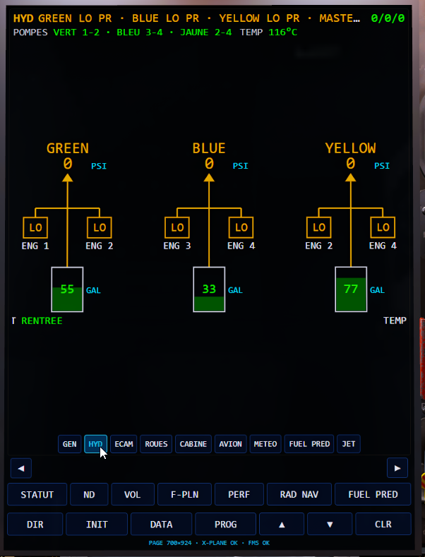
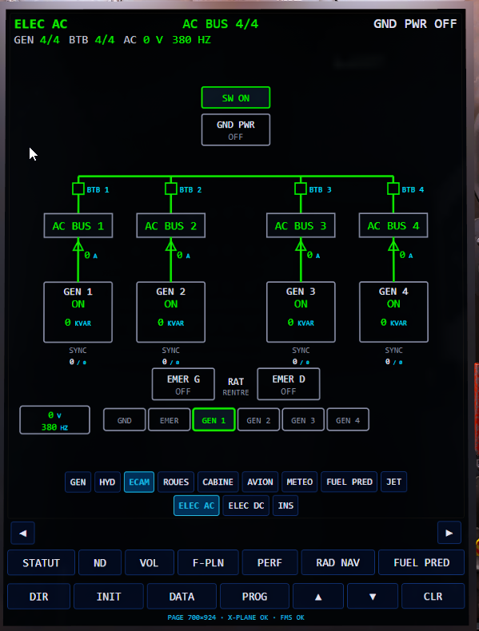


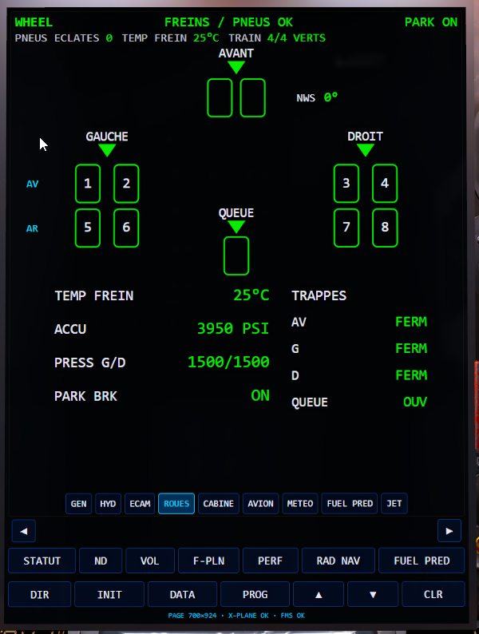

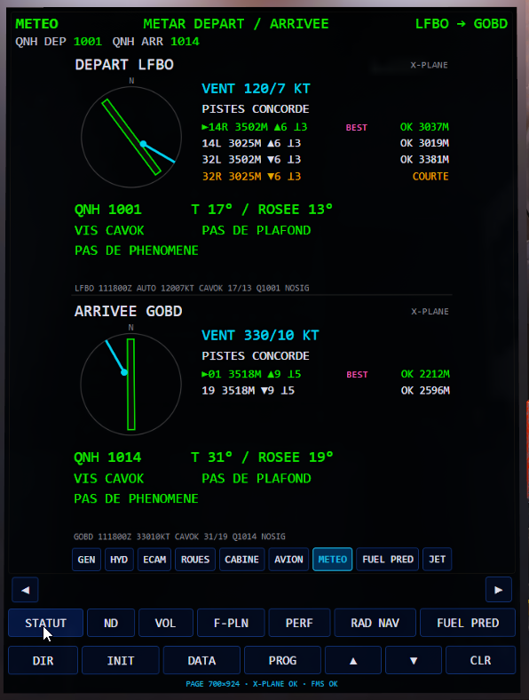
DATA and ENGINEER
DATA INDEX 1/2: on the left OPTIONS, SIMBRIEF, FUEL, FMS FILES, ENGINEER; on the right shortcuts DIRECT TO, FLIGHT PLAN, PERFORMANCE, RADIO NAV, FUEL PRED, INIT. 2/2 (▼): POSITION MONITOR (latitude, longitude, speeds, heading, altitude, Mach).
ENGINEER:
| Line | Function |
|---|---|
| <ENGINEER FUEL | Colimata fuel trim mode: GROUND, TAKEOFF, FLIGHT, DESCENT, LANDING, MANUAL (* = active mode). MODE AUTO ON: the mode follows the flight phase. SUIVI PANNEAU (panel follow): follows forward / aft transfers. |
| <SEQ ENGINEER FO | Virtual crew: START PLANE COPILOT / OFF PLANE COPILOT (aircraft preparation and shutdown), START ENGINE ENGINEER / OFF ENGINE ENGINEER (engines). Press twice within 5 s for each sequence. The first officer and the engineer call out their actions and report by voice. |
| <CG / THRUST | Plugin aerodynamic module: AUTO CG (simulated CG, elevons brought back to 0 above M1.0) and REAL THRUST (Concorde thrust up to M2), ON / OFF. Shows simulated CG shift, elevons, transfer, max thrust, engine / intake thrust, raw Colimata thrust, average lift/drag. |

OPTIONS
From DATA > OPTIONS or ▼ from INIT. Settings are remembered.
| Setting | Effect |
|---|---|
| OPTIONS 1/2 | |
| LANGUAGE | FRANCAIS / ENGLISH. |
| UNITS | Altitude FT / M, runway FT / M, distance NM / KM (FLs are never converted). |
| WEATHER OPTIONS | Turbulence alert ON / OFF and lead time (min), threshold LIGHT / MODERATE, automatic seat belts, weather on the VOL page, forecast turbulence. |
| FLIGHT PROFILE | VOL MACH: STANDARD (supersonic only over the sea) or BYPASS (everywhere); COAST MARGIN 15 / 25 / 40 NM; land / sea distances of the route. |
| AUTO ENGINEER | Automatic fuel trim by flight phase (ON / OFF). |
| MANAGED MODE | MANAGED THRUST ON / OFF; GERE (VNAV) ON / OFF; AUTO REVERSERS; REHEAT AUTO: reheats 1 and 2 on at M1.0 in the climb, off at M1.7; if you touch the reheats yourself, AUTO stays quiet (PILOT state) until on the ground; COPILOT ALT ON / OFF (see Copilot ALT).; AP BY SPEED ON / OFF: autopilot maximum bank angle from the Mach (30° at low speed, 25° high subsonic, 20° supersonic), adjustable on the right (30/25/20); a message is shown at each change; ROLL PREDICTION ON / OFF and PRED SUB/SUP (10/17): autopilot roll anticipation from the Mach (see Autopilot). |
| OPTIONS 2/2 | |
| CREW VOICE | Voice ON / OFF, 3D sound, first officer and engineer voices, volume 0 to 100 %, listen. |
| SOUND | Audio alerts ON / OFF. |
| TERRAIN / WX | Terrain source (GRID + X-PLANE / X-PLANE ONLY / OFF), VAPP CORR (−20 to +40 kt), ground alert margin (500 to 5,000 ft), terrain and weather status, clear stored routes. |
| SIMGROUNDMAP | Shows the SimGroundMap map if it runs on the PC (address 127.0.0.1:8073). |
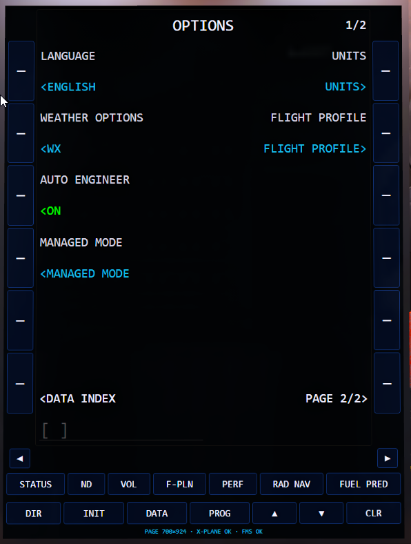
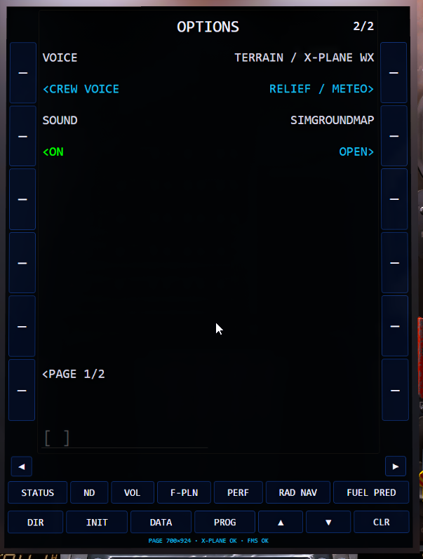
Sleep (MCDU hidden)
The MCDU sleeps when:
- batteries 1 and 2 are OFF (black screen);
- the cockpit screen is hidden (Plugins > Concorde_NGR > Afficher / masquer l'ecran du cockpit, show / hide cockpit screen);
- the loaded aircraft is not the Concorde FXP (message
AVION NON CONCORDE FXP · MCDU EN VEILLE).
While asleep the MCDU no longer acts on the aircraft: no managed autopilot, no managed speed, no fuel management, no JETTISON. The plugin aerodynamic module (thrust, drag, CG, consumption) stays active. Switch a battery back on or show the screen again to wake it up.
X-Plane FMS watch
The MCDU writes its plan into the X-Plane FMS, which the autopilot follows. If another tool changes that FMS (VATSIM / IVAO controller, X-Plane ATC, G1000, "direct to"…), the MCDU notices:
- only the active waypoint changed (same plan): green message
DIR TO X-PLANE : X; the MCDU follows; - the plan changed: orange message
FMS X-PLANE MODIFIE (ATC ?)and a page comparing both plans (number of waypoints, active waypoint, last waypoint).
| Key | Effect |
|---|---|
| L6 <REPRENDRE (take) | Adopts the X-Plane plan in the MCDU. |
| R6 RENVOYER> (send back) | Keeps the MCDU plan and sends it back to the X-Plane FMS. |
The MCDU's own uploads do not trigger the alert.
Autopilot
installer.bat also changes 10 autopilot settings in CONCORDE_FXP.acf (acf/_ott_* lines: speed, roll and pitch response). The MCDU calculations (MANAGED mode) rely on them. Since V1.1 they are part of the installation (no more installer_pilote_auto.bat); uninstall (choice 4) puts them back as in the original. Values before / after: installer\LIST_OF_CHANGES.txt.
In flight, the plugin adapts two settings to the Mach number, each switchable ON / OFF in OPTIONS > MANAGED MODE (remembered, even without showing the MCDU):
- AP BY SPEED: maximum bank 30° at low speed, 25° high subsonic, 20° supersonic.
- ROLL PREDICTION: roll anticipation: original value below M0.60, 10 at M0.95, 17 above M1.60 (adjustable
PRED SUB/SUP). On the ground the original value is restored. If you change the roll prediction yourself in X-Plane's autopilot constants window, the plugin leaves it alone until the next landing. Experimental: if in doubt, set it OFF.
The screen in the cockpit
installer.bat adds the MCDU screen to the Concorde cockpit (CONCORDE_FXP_cockpit.obj, backup .originalconcorde) and installs the tablet around it. The screen is shown and clickable right in the cockpit.
- Plugins > Concorde_NGR > Afficher / masquer l'ecran du cockpit (show / hide cockpit screen): shows or hides the screen. The choice is remembered between flights. Hidden screen = MCDU asleep (see Sleep).
- Plugins > Concorde_NGR > Afficher / masquer MCDU (show / hide MCDU): opens the MCDU in an X-Plane window, in addition to the cockpit screen.
Uninstalling (installer.bat choice 4) restores the original cockpit.
Troubleshooting
Plugin menu: Plugins > Concorde_NGR (menu items are in French).
| Problem | Solution |
|---|---|
| Windows blocks a .bat ("Windows protected your PC") | Click More info then Run anyway. To avoid it: before extracting, right-click the zip > Properties > tick Unblock > OK. |
| The antivirus quarantines a file (.bat or .xpl) | Restore and allow it: these files are harmless. |
| The MCDU stays black | Battery 1 or 2 ON. Check that the cockpit screen is not hidden (plugin menu). If the bottom of the screen shows X-PLANE HORS LIGNE (API 8086): the page cannot read X-Plane; check that no firewall or antivirus blocks X-Plane and open http://127.0.0.1:8086/api/capabilities in a browser (X-Plane running): it must show an answer. |
NGR picture with BATTERY UNREADABLE and a START NGR button | The MCDU cannot read the aircraft battery (neither through the plugin nor through X-Plane). Click START NGR: the MCDU switches on and stays on. Please report it on Discord with your Log.txt. |
| The MCDU does not appear at all | Open X-Plane 12\Log.txt: it must contain Loaded Concorde_NGR.xpl and libcef.dll pret. Otherwise run installer.bat again and check that Resources\plugins\Concorde_NGR\win_x64\Concorde_NGR.xpl exists. |
| Page frozen or empty | Recharger la page MCDU (reload page), preferably on the ground: in flight, reloading resets MANAGED guidance, and X-Plane has already crashed during an in-flight reload (23/11/2026). |
X-PLANE HORS LIGNE or FMS HORS LIGNE (offline) at the bottom of the screen | Relancer le pont 8087 (restart bridge); if nothing changes: Reinit complete (pont + page). Never install two MCDU plugins together (same port 8087). |
Fuel not loaded (A VERIFIER) | Press LOAD FUEL/PAX again; check FOB on FUEL PRED. |
| The aircraft does not follow the MCDU plan | The X-Plane FMS was changed elsewhere: see FMS watch (RENVOYER). |
| GERE does nothing | The AP must be engaged, the aircraft above 1,000 ft AGL, and the MCDU not asleep. |
| No sound or voice | OPTIONS 2/2: SOUND = ON; CREW VOICE: voice ACTIVE, volume. |
X-Plane 12\Log.txt (taken right after the problem, before restarting X-Plane).Credits
Concorde NGR, created by pierre.r. Licence CC BY-NC 4.0.
Exception: the airfoils CONCORDE_DELTA1_NGR_V5 and CONCORDE_DELTA2_NGR_V5 are licensed under CC BY 4.0: free to reuse, including in a payware add-on, provided you credit “Concorde NGR – Pierre Romi”.
Version history
| Version | Date | Changes |
|---|---|---|
| V1.0 | 11 Nov 2026 | First complete manual: first flight, every page, sleep, FMS watch, autopilot option, cockpit screen, troubleshooting. |
| V1.1 | 20/11/2026 | Air France reserves; fuel alert above capacity (95 t); MANAGED: 250 kt at take-off, supersonic acceleration along the VMO, autothrottles disconnected at touchdown; maximum speed from the nose temperature (127 °C TMO, real air), Mach needle at 2.40, TMO alarm; COST INDEX 100 = as fast as the temperature allows; CRUISE checklist: AP MAX CRUISE OFF.; COST INDEX 0–200 (100 = optimum, 200 = M2.04) with required arrival time; ALT selector = ATC clearance; INIT 2/2; CRUISE MODE and OPTI level from the Air France table; supersonic fuel burn computed from thrust; ND: WPT, VOR.D, NDB, ARPT buttons (airports by weight); OPTI page reorganised, single values centred on their key, SQWK code below the aircraft (SURV). 23/11: COPILOT ALT (the MCDU sets the limit of each step on the selector); SID constraint lifted by turning the selector; OPTI level from the wind at each level (FL450-600, jet stream) and the COST INDEX (100 economy, 150 balance, 200 speed); wind used up to FL530; cruise descent to a better wind with the ALT SEL; no more drops or pitch-ups in cruise and at TOD (plugin); AP BY SPEED (max bank 30/25/20°); ROLL PREDICTION by Mach (experimental, ON/OFF); dark screen: battery read by the plugin + START NGR fallback button; single installer (autopilot settings included in installer.bat). |